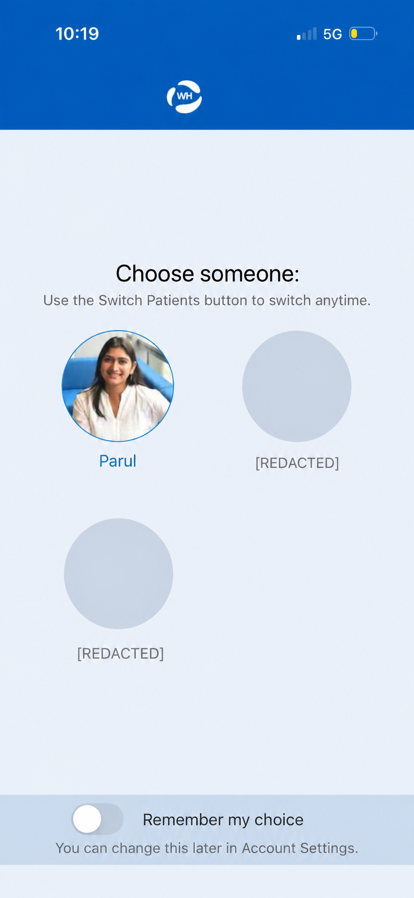
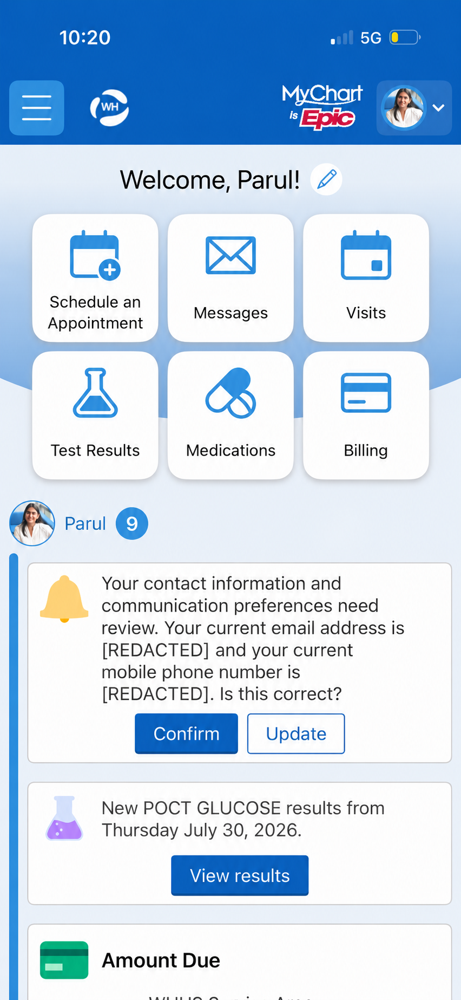
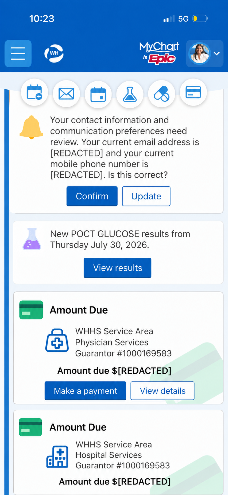
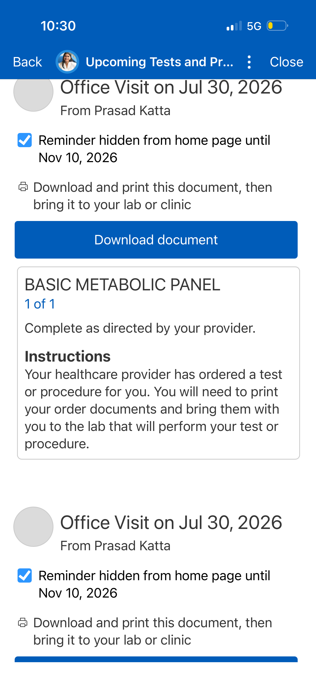
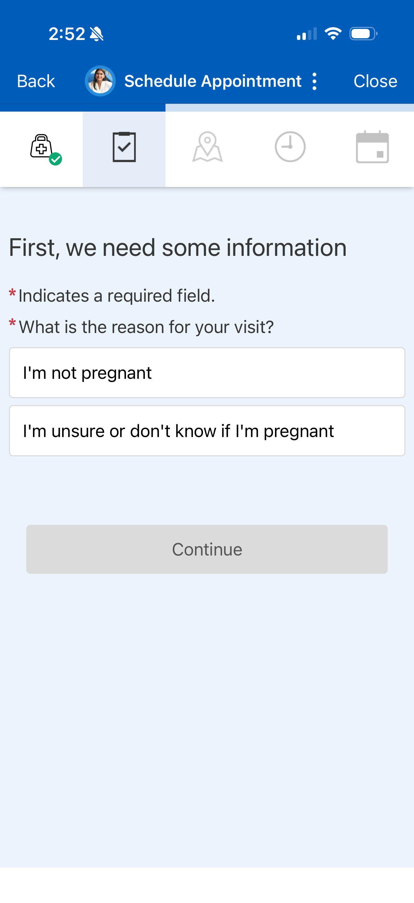
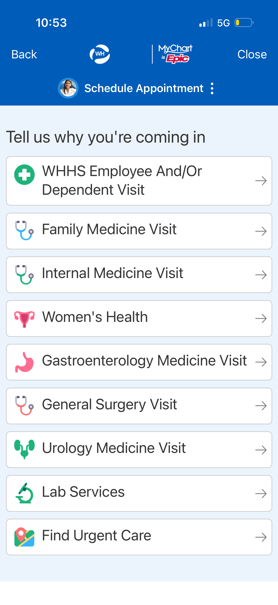
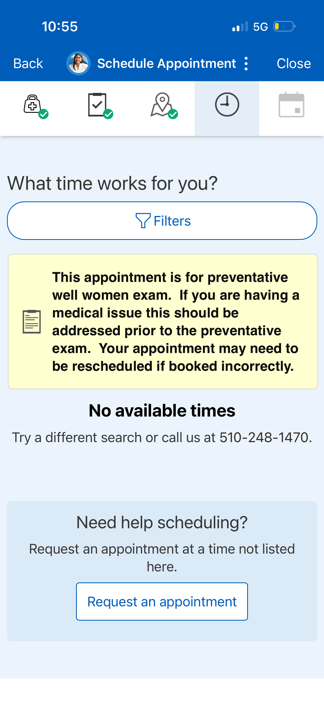
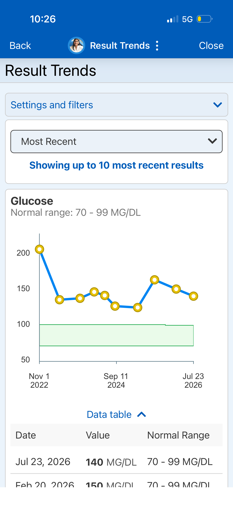

Eight findings across five flows — evaluated as a real patient, not a researcher with a protocol.
Why this app? I use MyChart as a patient managing an ongoing health condition. The evaluation came out of genuine frustration. I reviewed it against Nielsen's 10 Usability Heuristics and foundational UX principles, documenting eight distinct findings across five key flows.
The app opens with three equal-weight circles — me and my two children. But I'm the account holder. My children are dependents I manage on their behalf, not co-equal users. The flat structure requires me to consciously select myself every time, adding cognitive friction at the very first step.

Three equal-weight profiles — the account holder has no visual priority over dependents
The home screen surfaces medical results, billing, admin prompts, and promotional content — all in the same card format with the same visual weight. A patient logging in to check a test result has to scan through everything to find what matters.

Admin prompt and billing card share the same card format as test results — no visual triage
Six shortcut icons appear at the top of the home screen. As you scroll, they collapse into smaller floating icons that persist as you move through content. The consistent icon-plus-label format within a sticky horizontal strip is the visual language of a tab bar — a pattern that conventionally signals in-place view switching, not navigation to a new screen. But tapping these opens entirely new screens, which breaks the expected interaction model.

Shortcuts collapse into floating icons as you scroll — tab bar pattern, but they navigate rather than switch views
Upcoming test reminders display the full instruction text, the panel name, clinical instructions, and a download button — all expanded by default. The primary action is to download the document. Everything else is context.

Full clinical instructions shown by default — the download button is the only action most patients need
In the Women's Health scheduling flow, the app asks for pregnancy status before checking whether any appointments are actually available — so if the answer turns out to be "No available times," the question served no purpose. The pregnancy prompt may have clinical logic behind it (it could affect which providers are shown), but that makes it a candidate for post-booking intake rather than a pre-availability gate. More broadly, collecting specialty-specific information upfront, before confirming a slot exists, prioritises data collection over the patient's actual goal.

Pregnancy status collected before any availability is checked
The scheduling flow eventually shows which provider will see you — but only after you've navigated through a specialty menu to reach them. There's no path that starts with "Who do you want to see?" For a follow-up with an established provider, you have to know their specialty category and navigate there yourself. And if your provider's specialty isn't listed in the menu — endocrinology, for example, isn't — the flow has no way to reach them at all.

Specialty menu — no path to start from your established provider
After a multi-step scheduling flow, the failure state reads: "No available times. Try a different search or call us." The recovery option is a phone call — which is exactly what the app was intended to replace. No saved preferences, no nearby provider suggestion, no indication of when slots might open.

Dead end — after a multi-step flow, the only recovery option is a phone call
MyChart handles grouped panels well — a lipid panel shows LDL, HDL, triglycerides, and cholesterol together in one trend view. But results from separately ordered tests live in isolation: HbA1c has its own trend, vitamin B12 has its own, vitamin D has its own. As someone tracking multiple markers across blood draws, I find myself navigating back to the test results list, locating each result individually, and opening it in a separate screen. There's no unified way to see all my blood work in one place.

One result at a time — no way to see all blood draw results without navigating back to the list